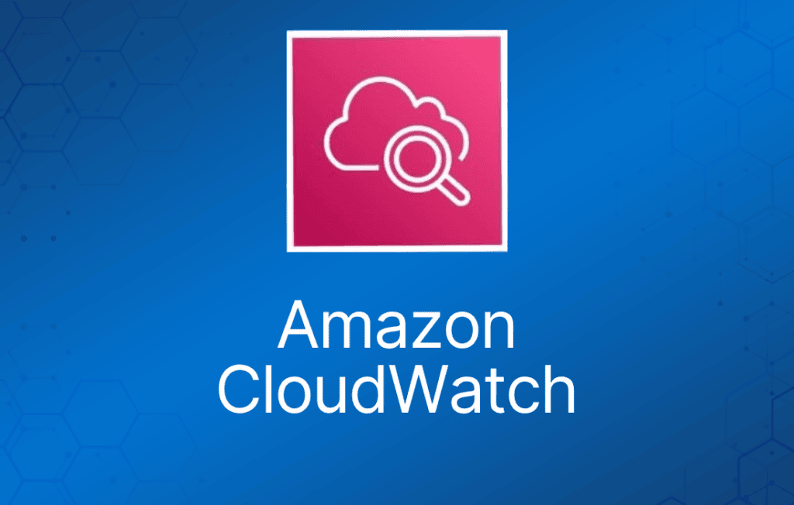
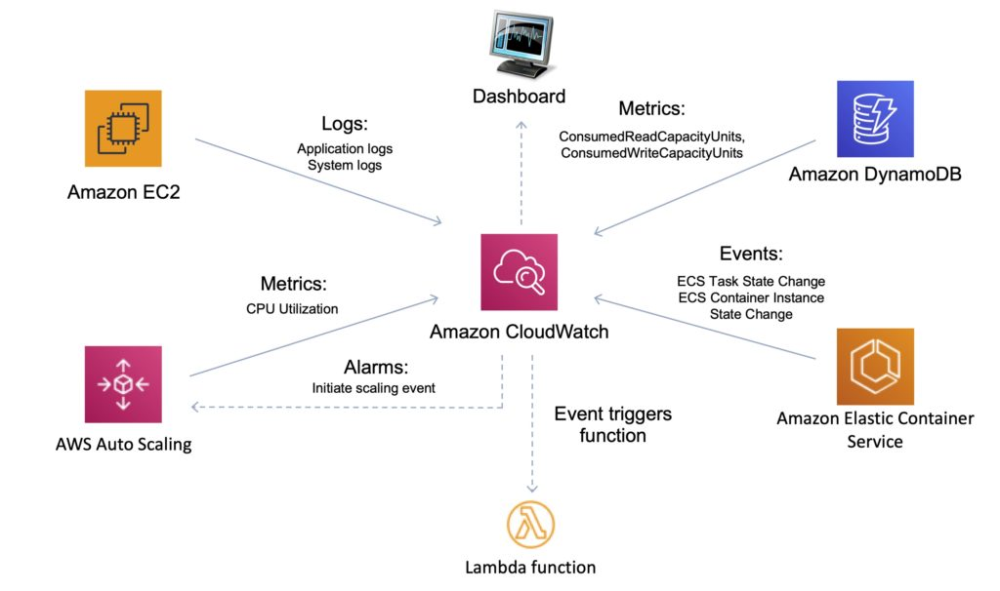
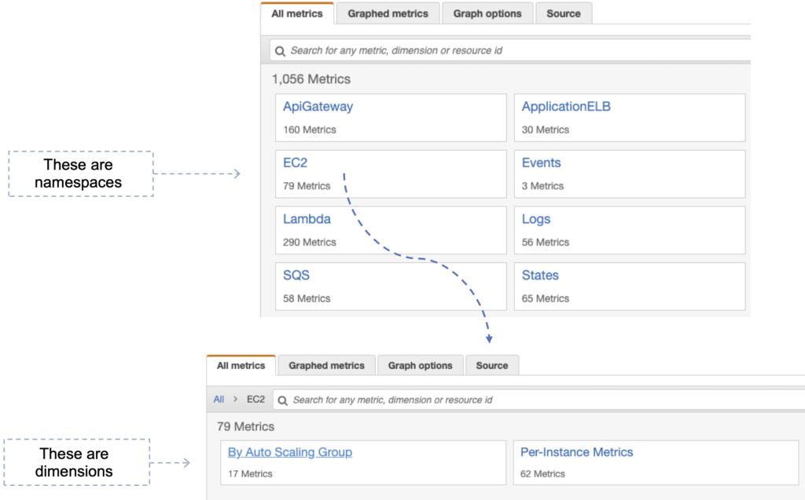
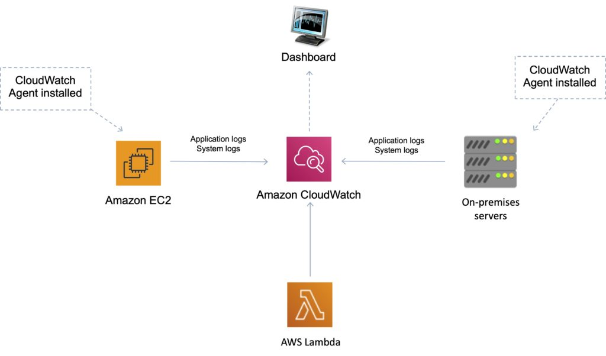
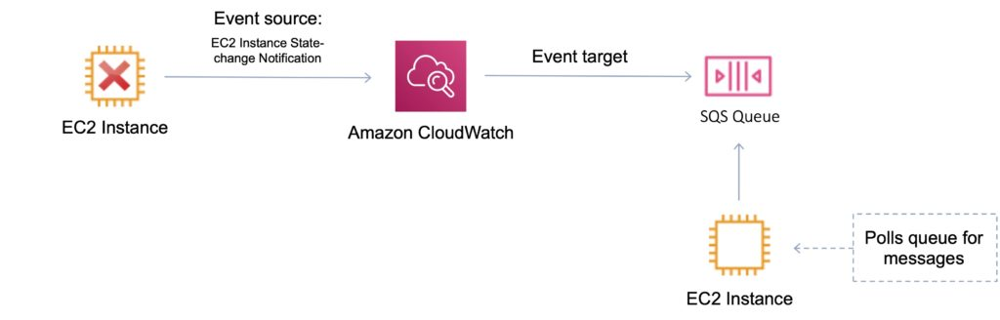

Amazon CloudWatch 是一项面向 AWS 云资源以及你在 AWS 上运行的应用的监控服务。
CloudWatch 用于收集和跟踪指标、收集和监控日志文件，以及设置告警。
借助 CloudWatch，你可以：
- 获得资源利用率的系统级全局可见性。
- 监控应用性能。
- 监控运行状况。
CloudWatch 告警（alarm）监控指标，并可配置为自动触发操作。
CloudWatch Logs 集中收集来自系统、应用和 AWS 服务的日志。
CloudWatch Events 提供描述 AWS 资源变化的系统事件流。

CloudWatch 可通过 API、命令行界面、AWS SDK 和 AWS 管理控制台访问。
CloudWatch 与 AWS IAM 集成。
CloudWatch 可以自动响应 AWS 资源的变化。
借助 CloudWatch，你可以监控以下资源：
- EC2 实例。
- DynamoDB 表。
- RDS 数据库实例。
- 应用和服务生成的自定义指标。
- 你的应用生成的任何日志文件。
CloudWatch 按以下方式保留指标数据：
- 周期小于 60 秒的数据点可保留 3 小时。这些数据点属于高分辨率自定义指标。
- 周期为 60 秒（1 分钟）的数据点可保留 15 天。
- 周期为 300 秒（5 分钟）的数据点可保留 63 天。
- 周期为 3600 秒（1 小时）的数据点可保留 455 天（15 个月）。
Amazon CloudWatch 与 AWS CloudTrail 对比：
| CloudWatch | CloudTrail |
| 性能监控 | 审计 |
| 记录跨 AWS 服务的事件——关注运维 | 记录跨 AWS 服务的 API 活动——关注活动记录，或者说追溯责任人 |
| 更高层次的综合监控和事件服务 | 更底层、更细粒度 |
| 支持多账户日志 | 支持多账户日志 |
| 日志无限期存储 | 日志无限期存储到 S3 或 CloudWatch |
| 告警历史保留 14 天 | 无原生告警功能；可使用 CloudWatch 告警 |
指标（Metrics）
指标是 CloudWatch 的基本概念。
指标表示一组按时间排序、发布到 CloudWatch 的数据点。
AWS 服务会向 CloudWatch 发送指标。
你也可以向 CloudWatch 发送自己的自定义指标。
指标存在于区域内。
指标无法删除，但会在 15 个月后自动过期。
指标由名称、命名空间以及零个或多个维度唯一定义。
CloudWatch 按以下方式保留指标数据：
- 周期小于 60 秒的数据点可保留 3 小时。这些数据点属于高分辨率自定义指标。
- 周期为 60 秒（1 分钟）的数据点可保留 15 天。
- 周期为 300 秒（5 分钟）的数据点可保留 63 天。
- 周期为 3600 秒（1 小时）的数据点可保留 455 天（15 个月）。
自定义指标（Custom Metrics）
你可以使用 AWS CLI 或 API 向 CloudWatch 发布自己的指标。
你可以在 AWS 管理控制台中查看已发布指标的统计图表。
CloudWatch 将指标数据存储为一系列数据点。
每个数据点都有一个关联的时间戳。
你甚至可以发布一组聚合的数据点，称为统计集（statistic set）。
高分辨率指标（High-Resolution Metrics）
每个指标属于以下之一：
- 标准分辨率，数据粒度为一分钟
- 高分辨率，数据粒度为一秒
AWS 服务生成的指标默认为标准分辨率。
发布自定义指标时，你可以将其定义为标准分辨率或高分辨率。
发布高分辨率指标时，CloudWatch 以 1 秒的分辨率存储它，你可以以 1 秒、5 秒、10 秒、30 秒或 60 秒的任意倍数为周期读取和检索它。
高分辨率指标可以让你更及时地了解应用的亚分钟级活动。
请注意，自定义指标的每次 PutMetricData 调用都会收费，因此对高分辨率指标更频繁地调用 PutMetricData 会导致更高的费用。
如果在高分辨率指标上设置告警，你可以指定周期为 10 秒或 30 秒的高分辨率告警，也可以设置周期为 60 秒任意倍数的常规告警。
周期为 10 秒或 30 秒的高分辨率告警费用更高。
命名空间（Namespace）
命名空间是 CloudWatch 指标的容器。
不同命名空间中的指标彼此隔离，因此来自不同应用的指标不会被错误地聚合到同一统计中。
下表提供了几个 AWS 服务的命名空间示例：
| 服务 | 命名空间 |
| Amazon API Gateway | AWS/ApiGateway |
| Amazon CloudFront | AWS/CloudFront |
| AWS CloudHSM | AWS/CloudHSM |
| Amazon CloudWatch Logs | AWS/Logs |
| AWS CodeBuild | AWS/CodeBuild |
| Amazon Cognito | AWS/Cognito |
| Amazon DynamoDB | AWS/DynamoDB |
| Amazon EC2 | AWS/EC2 |
| AWS Elastic Beanstalk | AWS/ElasticBeanstalk |
维度（Dimensions）
在自定义指标中，--dimensions 参数很常见。
维度进一步阐明指标是什么以及它存储什么数据。
一个指标最多可以有 10 个维度，每个维度由名称-值对定义。

使用不同命令时，指定维度的方式不同。
使用 put-metric-data 时，你将每个维度指定为 MyName=MyValue；使用 get-metric-statistics 或 put-metric-alarm 时，使用 Name=MyName, Value=MyValue 的格式。
例如，以下命令发布一个带有 InstanceId 和 InstanceType 两个维度的 Buffers 指标。
aws cloudwatch put-metric-data –metric-name Buffers –namespace MyNameSpace –unit Bytes –value 231434333 –dimensions InstanceId=1-23456789,InstanceType=m1.small
以下命令检索同一指标的统计信息。单个维度的 Name 和 Value 部分用逗号分隔，但如果有多个维度，维度之间用空格分隔。
aws cloudwatch get-metric-statistics –metric-name Buffers –namespace MyNameSpace –dimensions Name=InstanceId,Value=1-23456789 Name=InstanceType,Value=m1.small –start-time 2016-10-15T04:00:00Z –end-time 2016-10-19T07:00:00Z –statistics Average –period 60
如果单个指标包含多个维度，使用 get-metric-statistics 时必须为每个已定义的维度指定值。例如，Amazon S3 指标 BucketSizeBytes 包含 BucketName 和 StorageType 两个维度，因此使用 get-metric-statistics 时必须同时指定这两个维度。
aws cloudwatch get-metric-statistics –metric-name BucketSizeBytes –start-time 2017-01-23T14:23:00Z –end-time 2017-01-26T19:30:00Z –period 3600 –namespace AWS/S3 –statistics Maximum –dimensions Name=BucketName,Value=MyBucketName Name=StorageType,Value=StandardStorage –output table
发布单个数据点
要为新指标或现有指标发布单个数据点，使用 put-metric-data 命令并提供一个值和时间戳。
例如，以下每条操作各发布一个数据点。
aws cloudwatch put-metric-data –metric-name PageViewCount –namespace MyService –value 2 –timestamp 2016-10-20T12:00:00.000Z
aws cloudwatch put-metric-data –metric-name PageViewCount –namespace MyService –value 4 –timestamp 2016-10-20T12:00:01.000Z
aws cloudwatch put-metric-data –metric-name PageViewCount –namespace MyService –value 5 –timestamp 2016-10-20T12:00:02.000Z
统计（Statistics）
统计是在指定时间段内对指标数据的聚合。
CloudWatch 基于你的自定义数据或其他 AWS 服务提供给 CloudWatch 的指标数据点提供统计信息。
| 统计项 | 说明 |
| Minimum | 指定时间段内观察到的最小值。你可以用此值确定应用的低活动量。 |
| Maximum | 指定时间段内观察到的最大值。你可以用此值确定应用的高活动量。 |
| Sum | 匹配指标的所有提交值之和。此统计可用于确定指标的总量。 |
| Average | 指定时间段内的 Sum/SampleCount 值。通过将此统计与 Minimum 和 Maximum 对比，你可以确定指标的完整范围以及平均值与最小值、最大值的接近程度。这种对比可以帮助你了解何时需要增加或减少资源。 |
| SampleCount | 用于统计计算的数据点数量。 |
| pNN.NN | 指定百分位数的值。你可以指定最多两位小数的百分位数（例如 p45.45）。百分位数统计不适用于包含负值的指标。更多信息请参阅百分位数。 |
CloudWatch 告警（Alarms）
你可以使用告警来代表你自动触发操作。
告警在指定时间段内监控单个指标，并根据指标值相对于阈值随时间的变化执行一个或多个指定操作。
操作是发送到 Amazon SNS 主题或 Auto Scaling 策略的通知。
你还可以将告警添加到仪表板。
告警仅在状态持续变化时才调用操作。
CloudWatch 告警不会仅仅因为处于某种特定状态就调用操作。
状态必须已发生变化并持续了指定的周期数。
CloudWatch Logs
Amazon CloudWatch Logs 让你可以使用现有的系统、应用和自定义日志文件来监控和排查系统及应用问题。
你可以使用 Amazon CloudWatch Logs 监控、存储和访问来自 Amazon Elastic Compute Cloud (Amazon EC2) 实例、AWS CloudTrail、Route 53 和其他来源的日志文件。
功能特性：
- 监控来自 Amazon EC2 实例的日志 —— 监控应用和系统日志，并可触发通知。
- 监控 CloudTrail 记录的事件 —— 可以基于 CloudTrail 捕获的 API 活动在 CloudWatch 中创建告警。
- 日志保留 —— 默认情况下，日志无限期保留。可按日志组配置，从 1 天到 10 年。
CloudWatch Logs 可用于实时应用和系统监控，以及长期日志保留。
CloudTrail 日志可以发送到 CloudWatch Logs 进行实时监控。
CloudWatch Logs 指标筛选器（metric filter）可以针对特定术语、短语或值评估 CloudTrail 日志。
可以使用 CreateExportTask 导出到 S3——需要 21 小时。
对于近实时或持久化日志，使用 Kinesis Firehose。
对于 Firehose 支持的任何目标，使用 Firehose。
对于实时场景，使用 Lambda 或带 KCL 消费者的 Kinesis Data Stream。
使用指标筛选器扫描日志数据，可生成 CloudWatch 指标。
可以创建订阅筛选器（subscription filter）将数据发送给订阅者。
CloudWatch Logs Agent
CloudWatch Logs 代理提供了一种从 Amazon EC2 实例向 CloudWatch Logs 自动发送日志数据的方式。
现在有一个统一的 CloudWatch 代理，可同时收集日志和指标。
统一的 CloudWatch 代理包含内存和磁盘利用率等指标。
统一的 CloudWatch 代理让你能够执行以下操作：
- 跨操作系统从 Amazon EC2 实例收集更多系统级指标。除 EC2 实例的指标外，这些指标还可以包括客户机内部（in-guest）指标。
- 从本地服务器收集系统级指标。这些服务器可以是混合环境中的服务器，也可以是不受 AWS 管理的服务器。
- 使用 StatsD 和 collectd 协议从应用或服务检索自定义指标。

CloudWatch Events
Amazon CloudWatch Events 提供近乎实时的系统事件流，描述 AWS 资源的变化。
可以使用 CloudWatch Events 通过 cron 或 rate 表达式调度在特定时间自动触发的自动化操作。
可以匹配事件并将其路由到一个或多个目标函数或流。
目标包括：
- Amazon EC2 实例。
- AWS Lambda 函数。
- Amazon Kinesis Data Streams 中的流。
- Amazon Kinesis Data Firehose 中的传输流。
- Amazon CloudWatch Logs 中的日志组。
- Amazon ECS 任务。
- Systems Manager Run Command。
- Systems Manager Automation。
- AWS Batch 作业。
- Step Functions 状态机。
- CodePipeline 中的流水线。
- CodeBuild 项目。
- Amazon Inspector 评估模板。
- Amazon SNS 主题。
- Amazon SQS 队列。
在下面的示例中，一个 EC2 实例状态发生变化（已终止），事件被发送到 CloudWatch Events，后者将事件转发到目标（SQS 队列）。

常用 API 操作
理解以下 API 操作对 Developer Associate 考试很有帮助。考试前你还应该在 AWS 网站上查看这些以及其他 API 操作。
GetMetricData
- 在单个请求中检索多达 500 个不同的指标。
PutMetricData
- 将指标数据点发布到 Amazon CloudWatch。
- CloudWatch 将数据点与指定的指标关联。
- 如果指定的指标不存在，CloudWatch 会创建该指标。
GetMetricStatistics
- 获取指定指标的统计信息。
- CloudWatch 根据你指定的周期长度聚合数据点。
- 单次调用返回的最大数据点数为 1,440。
PutMetricAlarm